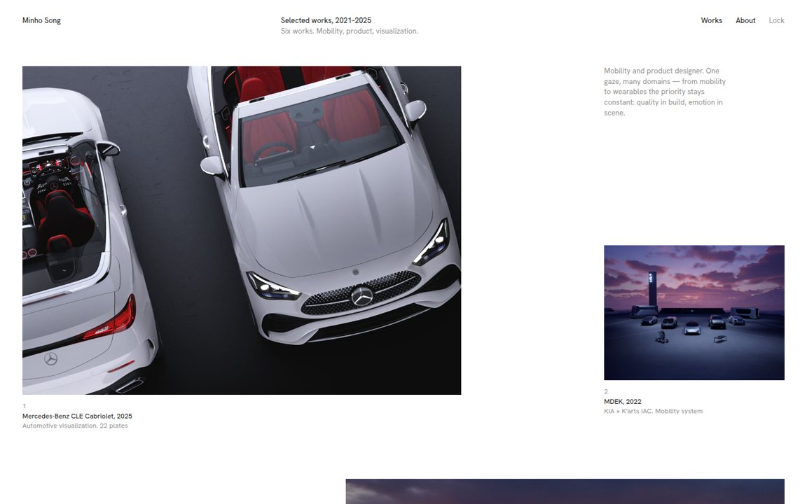
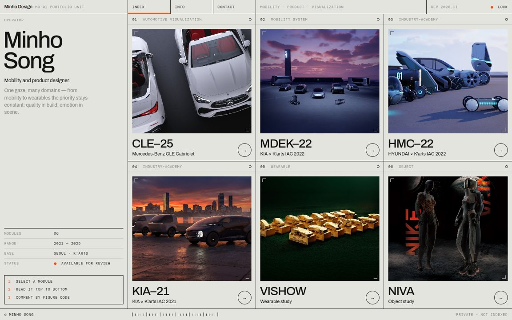
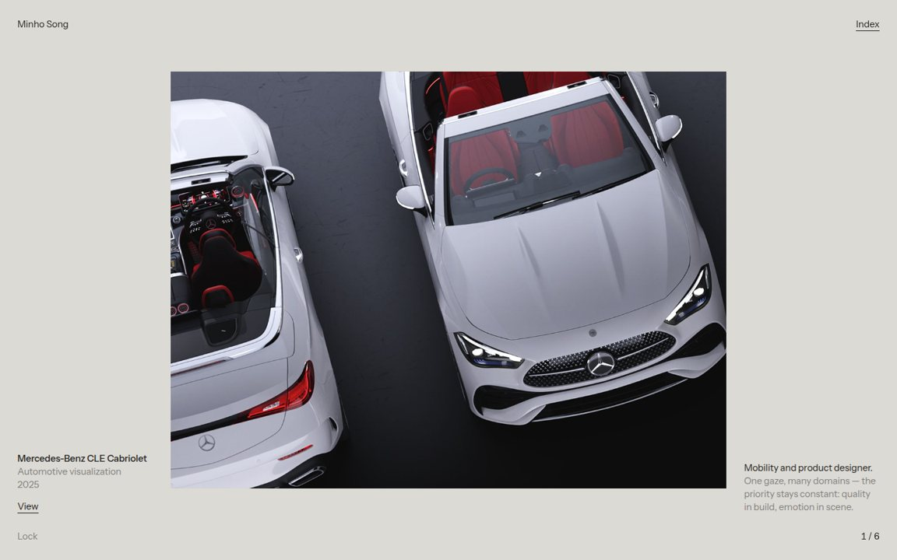
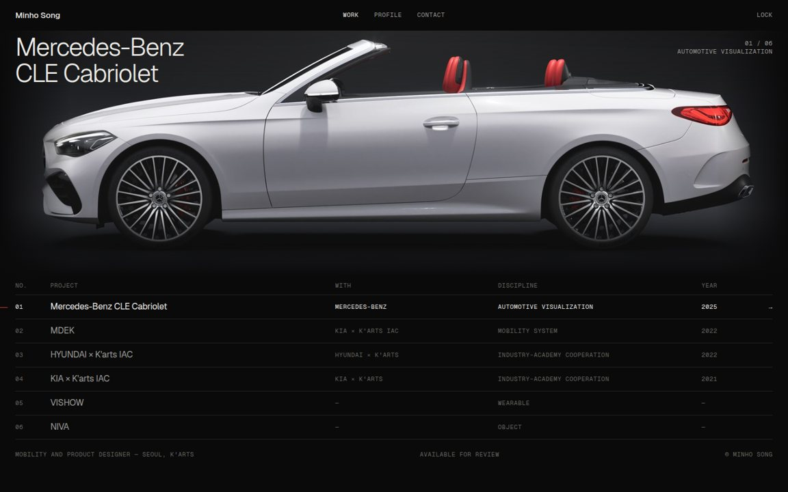
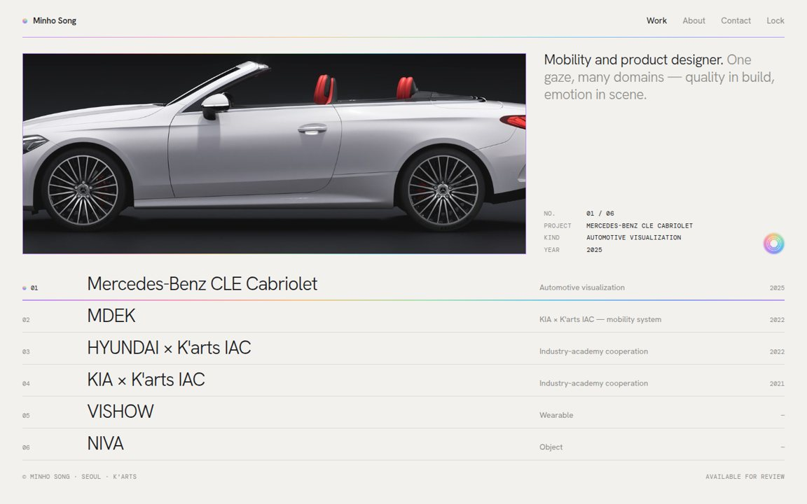
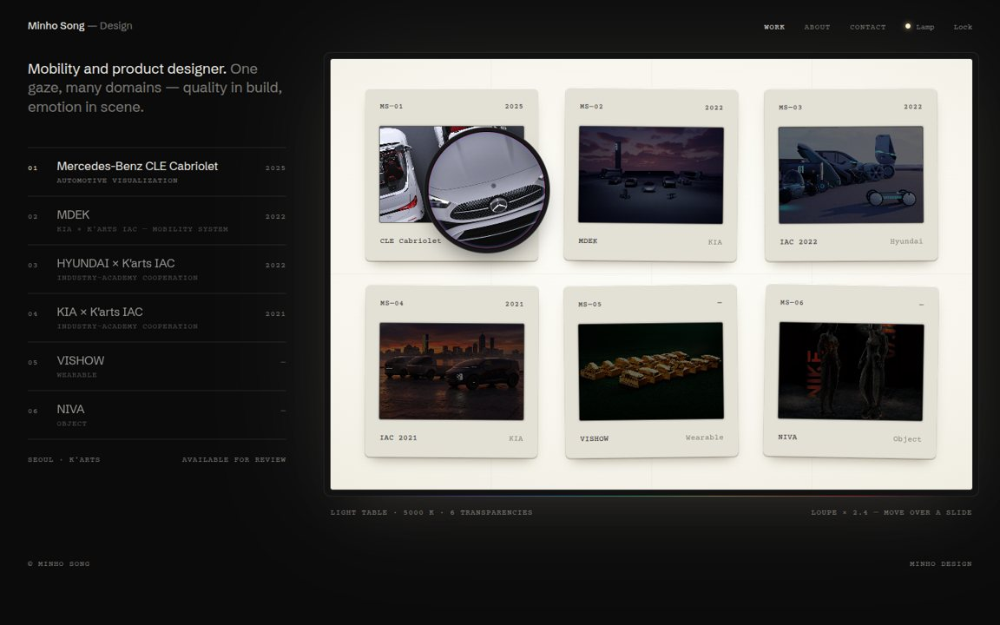
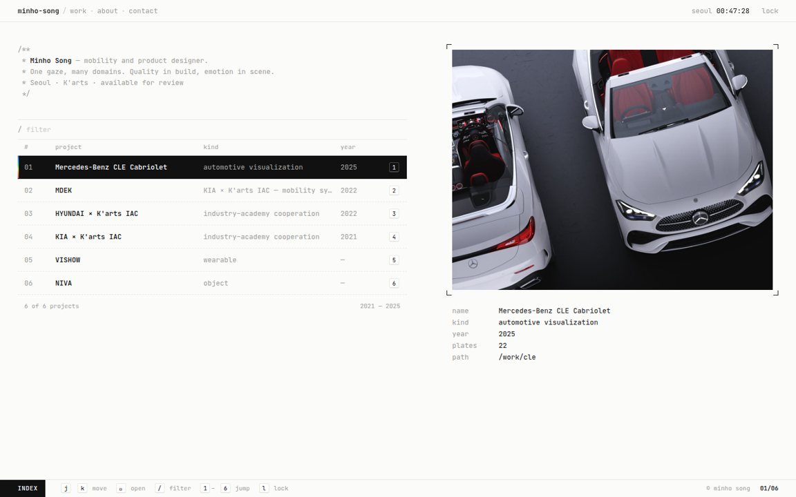
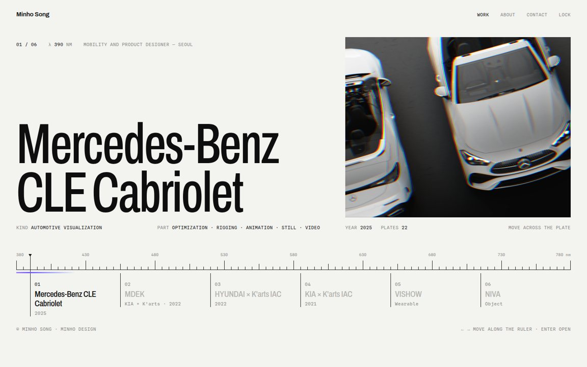

Cool-grey catalogue raisonné: one table, rows that open into plates, a prism hairline.
쿨 그레이 카탈로그 레조네 — 표 한 장, 행을 열면 도판이 펼쳐지고 프리즘 헤어라인 한 줄.
Geist · Geist Mono
Minho Design · Portfolio · Template proposals · 2026.11.10
Each template is the same content — the index and the Mercedes-Benz CLE Cabriolet detail — built in its own visual language, with a DESIGN.md that fixes colour, type, spacing and components. Pick one, or name the parts to combine.
Lock screen: any input + Enter









